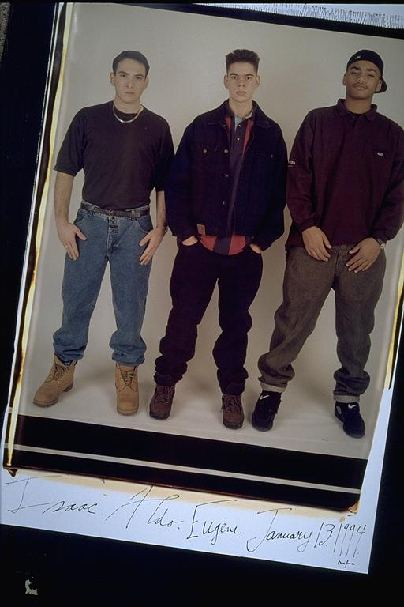

Pals: Boys Who Grew Up Together
elsadorfman.com/pals
Aldo: If you look carefully at Eugene, you'll notice his presence isn't as strong as usual. Comparatively anyways. Right before this picture was taken, Eugene had his face badly scratched, and so he wasn't his normal self in front of the camera, especially in this picture. We never really planned picture days precisely -- they just happened -- and often, something like this happened, or anything like a bad haircut or bad mood, and it always shows on the person's face.

elsad@comcast.net